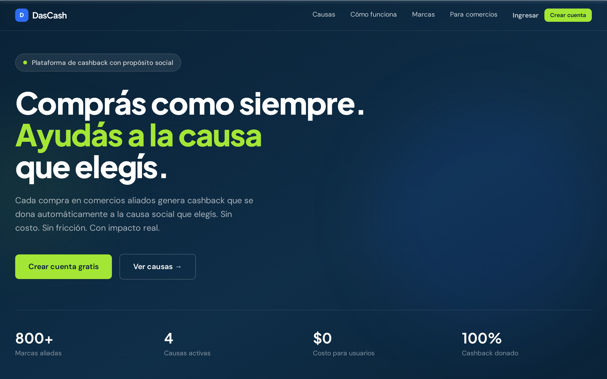
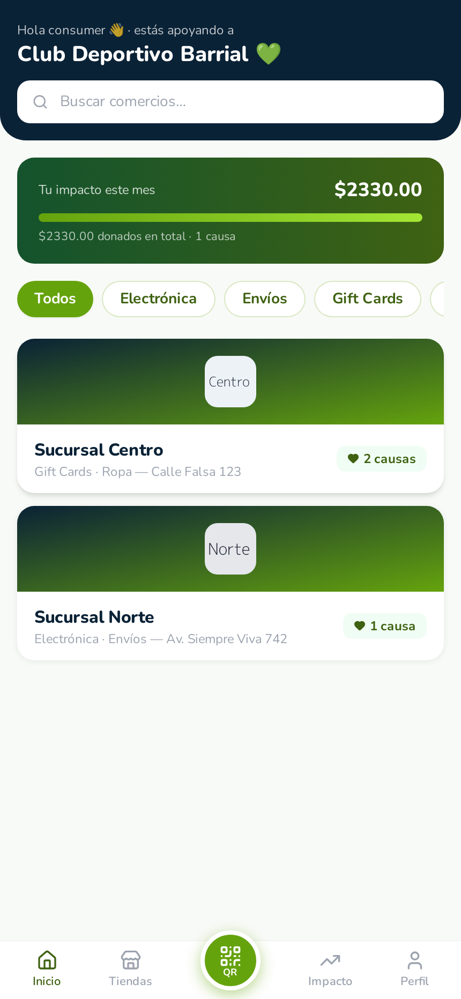
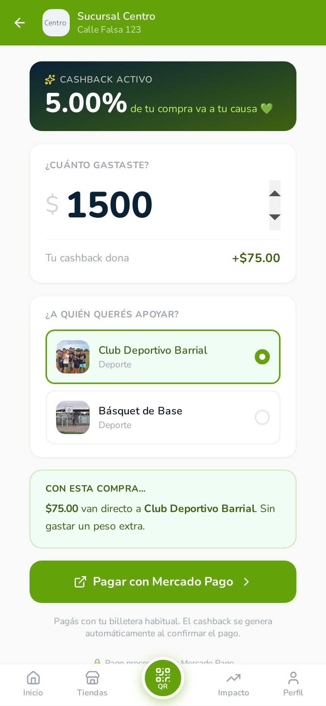
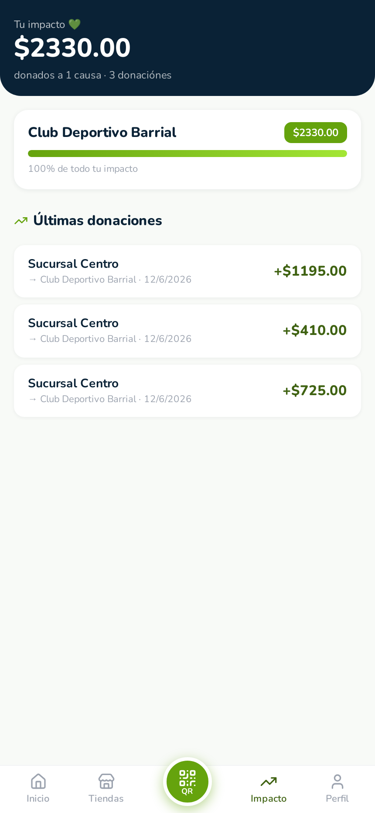
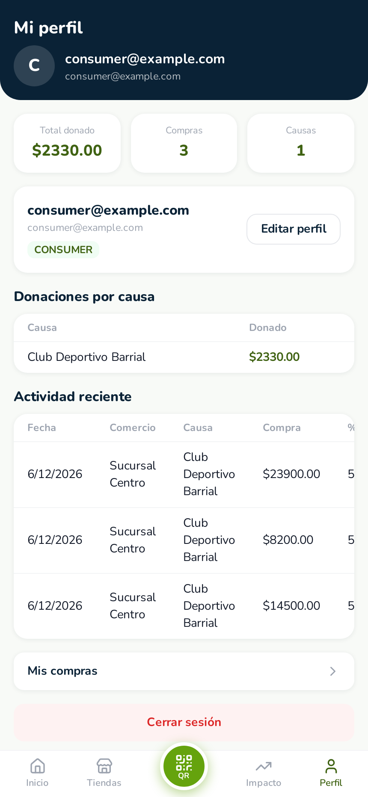

Qué es DasCash: cada compra en un comercio adherido genera una donación automática (3-6% del ticket, a cargo del comercio) a una causa que elige el cliente: el club del barrio, una escuela, un deportista. Al cliente no le cuesta nada extra; el comercio lo paga como costo de marketing que fideliza; la causa recibe ingresos recurrentes.
Decisión estratégica («la causa vende»): los deportistas y los clubes son el motor de adquisición y credibilidad de la app. Por eso la secuencia es: cerrar una causa con comunidad activa → activar un comercio piloto → llevar números reales a instituciones (municipalidad, comité olímpico, FEDUA), que se siembran desde el día 1 pero no bloquean nada.
Primer test: plata real, grupo cerrado de 20-50 personas reclutadas por el club, 3-4 semanas, un solo comercio.

Capturas de la app funcionando hoy. El circuito completo: conocer la plataforma y registrarse (en casa o en el club), pagar en la caja, y ver el impacto al instante.




Forma: una causa real (un club con comunidad activa y un referente deportivo que le ponga la cara), un comercio (supermercado de barrio con dueño conocido), y un grupo cerrado de 20-50 compradores reclutados por el propio club: socios, padres, jugadores. Pagos reales chicos durante 3-4 semanas.
La gente se registra en el club: una juntada de 15 minutos donde el referente presenta la app y todos se registran ahí mismo, con asistencia en vivo. Esto valida también el momento «registro comunitario». Después compran en el súper escaneando el QR de la caja: escanear → monto → pagar.
| Métrica | Pregunta que responde |
|---|---|
| % de registrados que compran al menos 1 vez | ¿El club realmente moviliza? |
| % que escanea y completa el pago | ¿La caja tiene fricción? (métrica clave) |
| Compras por persona en el mes | ¿Hay recurrencia o es compromiso de una sola vez? |
| Tiempo de pago en caja vs. QR común de MP | ¿El comerciante lo tolera en hora pico? |
| $ donado acumulado | El número que después se muestra a instituciones |
Tres frentes en paralelo asimétrico: ~70% piloto, ~20% instituciones, ~10% producto. El piloto manda; lo institucional se siembra sin bloquear nada.
Dos horizontes que cuentan la misma historia; solo cambia quién mueve la plata.
A quién se le cobra: al comercio (punto extra sobre el porcentaje solidario + más adelante suscripción mensual cuando el valor esté probado). A quién no: a clubes y deportistas, gratis siempre — son la fuerza de ventas y la credibilidad de la red. La analogía con PedidosYa se sostiene justamente porque PedidosYa le cobra al restaurante (el comercio), no al cliente ni al repartidor.
El pago va 100% al comercio; la app registra cada donación; al cierre del mes el fundador transfiere a mano al club y publica el comprobante. El split automático se construye en paralelo y se estrena al escalar. Mensaje para presentaciones: «el piloto valida el comportamiento; la automatización del split es la fase siguiente y ya está planificada sobre MP Marketplace».
| Riesgo | Mitigación |
|---|---|
| El club difunde pero la gente no compra | Juntada de registro presencial (no un link por WhatsApp) + referente que pone la cara. Si igual no compran, el piloto lo dice con números en 4 semanas — eso también es un resultado. |
| Fricción en caja en hora pico | «Causa preferida» preconfigurada: escanear → monto → pagar. Se mide el tiempo contra el QR común de MP; si supera ~15-20 segundos extra, es lo primero a arreglar. |
| El comerciante se enfría a mitad del piloto | El % del piloto lo cubre el fundador (riesgo cero real) + reporte semanal de ventas vía app. |
| Confianza en la plata («¿llega de verdad?») | Comprobante de transferencia publicado al grupo + saldo de la causa visible en la app en tiempo real. |
| Aprobación de MP Marketplace demora (Fase 2) | No bloquea: el piloto corre en Fase 1. El trámite se inicia en paralelo durante las semanas 3-6. |
| Tiempos políticos institucionales | Por diseño: las instituciones se siembran pero ningún hito del piloto depende de ellas. |
Honestidad comercial (regla del piloto): no prometer transferencia automática a las causas. Decir: «durante el piloto, la liquidación a la causa la gestiono yo manualmente». Es verdad y deja cubierto al proyecto.